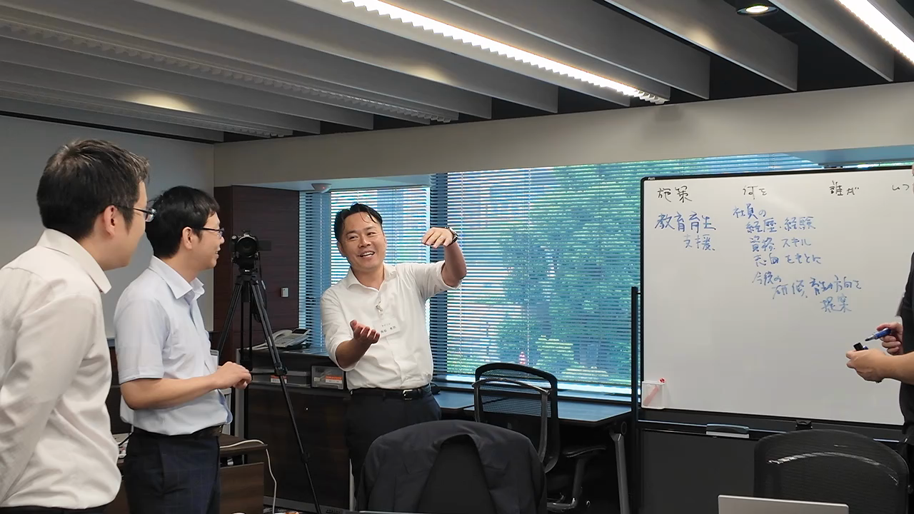
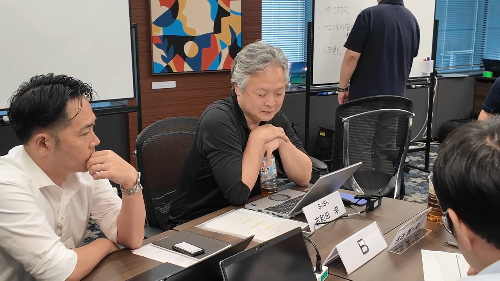

JMI EMC第37期の開講3日間で、参加者に最初に起きた変化は、経営に必要な「答え」を得たことではない。自分が何を変えるのか、誰と実現するのか、AIに任せられない判断とは何か——曖昧だった課題を、自分の言葉で問い直し始めたことだった。日本生命、東京エレクトロン、ゆうちょ銀行、東京ガス、そして行政組織から参加した5人の声を通じ、次世代経営者育成の出発点をたどる。
KEY POINTS
- — 異業種の参加者との対話が、自社の常識や自分の役割を相対化するきっかけになっている。
- — 参加者は「殻を破る」「会社の未来を語る」「経営者目線を持つ」など、それぞれの成長課題を言語化した。
- — AI時代の経営では、情報処理をAIに委ねても、価値判断と結果への責任は人が引き受ける必要がある。
- — 研修の価値は、学びを持ち帰るだけでなく、周囲との対話や日々の業務へ移して初めて組織の変化につながる。
- — 5人に共通していたのは、経営者としての覚悟を完成した状態ではなく、行動によって育てていこうとする姿勢だった。
JMI EMCとは
JMI EMCは、一般社団法人日本能率協会 経営人材・革新センターが実施する次世代経営者育成プログラムである。第37期の開講3日間には、異なる企業・組織から経営人材候補が集まり、講義、グループワーク、経営者講演を通じて、自社の課題と自身のリーダーシップを見つめ直した。
同じ教材を学んでも、参加者が持ち込む現実は一人ひとり異なる。事業戦略、組織統合、部門間連携、人材育成、行政と民間の違い。だからこそ、対話の中で自分の前提が揺さぶられ、これまで言葉にできなかった問いが輪郭を持ち始める。
INTERVIEW
日本生命保険相互会社・江田氏
知識より先に、自分の殻を破れるか
日本生命の江田氏は、会社からの指名を受けて参加した。参加前から経営知識を学ぶ場だと理解していたが、実際に異なる企業の参加者と出会うことで、学びに向かう気持ちはさらに高まったという。
江田氏が口にしたのは、知識やフレームワークの習得だけではなかった。むしろ、知識やフレームを使う側である自分自身をどう変えるか。江田氏が語ったのは、そちらだった。
“知識やフレームもそうですが、それ以上に、自分自身の内面的な成長や、殻を破ることができたらと思っています。”
経営者候補として期待されるほど、過去の成功体験や組織の中で築いてきた役割は大きくなることが多い。その経験は強みである一方、新しい環境で率直に問い、他者の意見によって考えを変えることを難しくもする。「殻を破る」という言葉には、知識を増やすだけでなく、自分の判断の癖や守ってきた前提まで見直そうとする意志が表れていたように見えた。

INTERVIEW
人事院・松浦氏
民間との対話が、経営者目線を引き寄せる
松浦氏は、人事部門からの打診を受けて自ら手を挙げて参加した。参加を決めた理由の一つは、普段の職務では得にくい民間企業の参加者との交流にあった。官民を問わず組織の目的や制度は違っても、人を動かし、限られた資源で成果を生み、変化に対応するという課題には重なる部分があるのだろう。
開講直後の「むちゃくちゃ楽しいです」という率直な言葉の一方で、経営者としての覚悟を尋ねられると、まだ「30％ほど」と答えた。完成しているように見せるのではなく、現在地を正直に認識している。その言葉は、覚悟が宣言だけで生まれるものではなく、異なる立場の人と向き合う中で育つことを示している。
“研修前はそこまで高くなかったのですが、他の方とのやり取りの中で、経営者目線への意識が徐々に高まってきました。”
行政組織においても、自部門の最適だけでなく、組織全体と社会への影響を考えて判断する視点は求められる場面が少なくないのだろう。民間企業の参加者が語る事業責任や意思決定の速度に触れることで、松浦氏の中でなんとなくの輪郭にとどまっていた「経営者目線」が、抽象的な概念から自分の課題へと近づいていた。
INTERVIEW
東京エレクトロン株式会社・久須美氏
会社の未来を、自分の言葉で語る
東京エレクトロンの久須美氏は、自身の立場が変わるタイミングで、視座を変えて仕事をするために社外の人と意見を交換してほしいという上司からの意向を受けて参加した。異なる背景を持つ参加者との議論は、脳が疲れるほど密度が高かったが、それ以上に楽しかったと振り返る。
久須美氏が見つけた課題は、「会社の未来を語る力」だった。目の前の業務を正確に遂行することと、会社がどこへ向かうべきかを言葉にすることは同じではない。未来には唯一の正解がなく、語れば問い返される。それでも、自分の考えを外に出さなければ、仲間を増やすことも、議論を前へ進めることもできない。議論の場で自分の考えを口にしようとしたとき、久須美氏は言葉が出てこないことに気づいた。
“会社の未来を自分の言葉で語ることを、今までしてきませんでした。自分の考えを言葉にして発表する力を、もう少し鍛えていかないといけないと思いました。”
経営者の仕事は、完成した計画を説明することだけではない。不確実な状況の中で進む方向を示し、反対意見も受け止めながら、組織が考えるための土台をつくることである。久須美氏の言葉は、その最初の訓練が「自分の言葉で語る」ことにあると教えてくれる。

INTERVIEW
株式会社ゆうちょ銀行・生田氏
AIと人間の境界を、経営の責任から考える
ゆうちょ銀行の営業統括部で部長を務める生田氏は、事業戦略の立案や営業部門全体の統括に取り組んでいる。毎年1名を派遣している同社の枠で、今年の参加者として送り出された。3日間で得た実感は、日々の業務で抱えていた「モヤモヤ」が、経営学の視点と他社参加者との議論によって整理されたことだった。
特に印象に残ったテーマの一つが、AIと人間の役割である。
“AIが重要だということはなんとなく理解しているつもりでした。しかし、AIができることと、人間がやらなければならないこととの境界線が、こういうところにあるのだと分かりました。”
AIは情報を集め、整理し、選択肢を示す力を急速に高めている。一方、何を優先するのか、誰にどのような影響が及ぶのか、最終的な結果に誰が責任を持つのかは、人が引き受けることになるのだろう。生田氏の気づきは、AI活用の技術論よりも、経営者が手放してはいけない判断の輪郭を示している。
経営と現場をつなぐミドルの責任
もう一つの気づきは、「ミドルダウン・ミドルアップ」の役割だった。経営の意図を現場が動ける言葉へ変え、現場の変化を経営が判断できる情報へ変える。その双方向の働きが、組織のレジリエンスを左右する。
“部長が果たす役割によって、会社の出来不出来が決まると感じました。”
会社へ戻って最初に行うことを尋ねると、生田氏は、部下や近い立場の社員へ学びを共有し、自社で何を実践できるかを一緒に考えると答えた。
“せっかく得たものを、そのまま持っているだけだと意味がないと感じています。”
研修成果は、参加者本人の理解だけでは組織成果にならない。共有し、問い返され、自社の仕事に翻訳されて初めて、個人の学びが組織の変化へ移っていく。

INTERVIEW
東京ガス株式会社・江波戸氏
「興奮しています。ワクワクしています」
東京ガスの江波戸氏は、会社からの指名を受けて参加した。経営者講演を聞いた直後の気持ちを「ちょっと興奮しています。ワクワクしています」と表現した。心を動かされたのは、経営者が実現したいことを持ち、その実現に責任を負いながら、周囲の期待へ応えていく姿勢だった。
“やりたいことを成し遂げる責任と、周囲の期待への応え方に、非常に参考になるところがありました。ちょっと興奮しています。ワクワクしています。”
知識を受け取ったというより、自分も動きたいという熱が生まれた。その反応は、経営者の経験が成功事例としてではなく、自分自身への問いとして届いたように見えた。
組織の境界を越えて、仲間を増やす
江波戸氏が最も心に残ったこととして挙げたのは、役割の違いを越えて「仲間を増やす」という仕事のあり方だった。
“役割は違っても、そこは平等だという話も含めて、自分の周りに仲間を増やしていく。そういう仕事の仕方をしていきたいと思いました。”
買収と売却に関わる立場にある江波戸氏にとって、これは実務に直結する課題である。背景には、買収した会社が持つ人的ネットワークを、本体へ十分に取り込めていないという課題がある。組織図や制度を整えるだけでは、人の経験や知識はつながらない。相手の役割を尊重し、共通の目的を言葉にし、一緒に進む関係をつくる必要がある。江波戸氏にとって「仲間を増やす」は、抽象的なリーダーシップ論ではなく、組織統合を前へ進める具体的な仕事になっていた。

5人の言葉から見える、次世代経営者育成の5つの変化
5人の発言は、経営者育成が知識の習得だけでは成立しないことを示している。
- — 自分を開く：江田氏は、過去の経験でできた殻を破り、内面から変わる必要性を語った。
- — 視座を上げる：松浦氏は、異なる組織の参加者との対話によって、経営者目線を自分の課題として意識し始めた。
- — 未来を言語化する：久須美氏は、会社の未来を自分の言葉で語り、問いを受ける力を鍛えようとしている。
- — 判断の責任を引き受ける：生田氏は、AI時代だからこそ、人が担う価値判断とミドルの責任を捉え直した。
- — 仲間を増やす：江波戸氏は、役割や組織の境界を越えて目的を共有する関係づくりへ踏み出そうとしている。
これらは別々の能力に見えるが、一つの流れとしてつながっている。自分の前提を開き、組織全体を見る視座を持ち、実現したい未来を言葉にする。その言葉に対する問いを受け止め、最終的な判断に責任を持つ。そして、一人で進めるのではなく、役割を越えて仲間を増やす。この循環が、経営者としての実践力を形づくる。
派遣企業にとって、研修後に設計すべきこと
参加者を研修へ送り出すだけでは、組織への波及は限定的である。派遣企業には、学びを社内で言語化し、試し、振り返る場を設けることが求められる。
- — 研修後に、本人が得た問いと次の行動を上司・同僚へ共有する。
- — 既存業務の中に、小さく試せるテーマと意思決定の範囲を用意する。
- — 成功だけでなく、判断に迷った点や失敗から得た学びも対話する。
- — 研修期間中に複数回、本人の視点と行動の変化を確認する。
- — 参加者同士のネットワークを、社外の知恵へアクセスする資産として支える。
経営人材育成は、研修部門だけの仕事でも、参加者個人だけの責任でもない。会社が実践の機会をつくり、本人がその機会に責任を持って応える。両者の往復によって、学びは組織能力へ変わっていく。
よくある質問
JMI EMCの参加者は、開講直後に何を感じていたか
多くの参加者が挙げたのは、異業種の参加者との対話によって自分の前提が揺さぶられ、経営者として向き合うべき課題が具体的になったことだった。完成した自信よりも、これから深めたい問いが言葉になっている。
異業種との対話は、なぜ経営者育成に有効なのか
社内だけでは無意識の前提に気づきにくいからである。異なる業界・組織の判断基準や課題を知ることで、自社の常識を相対化し、別の選択肢を検討できるようになる。
AI時代に経営者が担うべきことは何か
AIを使って情報処理や分析を高度化しながら、どの価値を優先するか、誰への影響を受け止めるか、結果に誰が責任を持つかを決めることである。AIの活用と、人間の責任の明確化は同時に進める必要がある。
研修の成果を社内に定着させるにはどうすればよいか
学びを共有するだけでなく、自社の課題に置き換えて小さく実践し、その結果を振り返ることが重要である。上司や同僚が問い返す場をつくることで、個人の気づきが組織の対話へ広がる。
覚悟は、行動の中で育っていく
開講初回の3日間を終えた5人は、経営者としての完成形を語ってはいない。殻を破りたい。経営者目線を持ちたい。会社の未来を語りたい。AIに任せられない判断を見極めたい。組織を越えて仲間を増やしたい。いずれも、これからの行動を方向づける問いである。
経営者としての覚悟は、最初から100％備わっているものではない。問いを言葉にし、他者と議論し、現場で試し、結果を引き受ける。その繰り返しの中で育っていく。
JMI EMC第37期の学びは、始まったばかりだ。5人が持ち帰った問いが、それぞれの会社と組織でどのような対話と行動を生むのか。次に確かめるべき変化は、研修会場の外にある。
EDITORIAL NOTE
- 取材対象：JMI EMC第37期 開講3日間の参加者5名
- 取材日：2026年7月16日〜18日
- 取材協力：日本生命・江田氏、人事院・松浦氏、東京エレクトロン・久須美氏、ゆうちょ銀行・生田氏、東京ガス・江波戸氏
- 実施主体：一般社団法人日本能率協会 経営人材・革新センター
- 編集方針：発言は収録映像の文字起こしをもとに、意味を変えない範囲で言いよどみと重複を整理
- 掲載写真：各取材対象者本人のインタビュー映像からキャプチャ